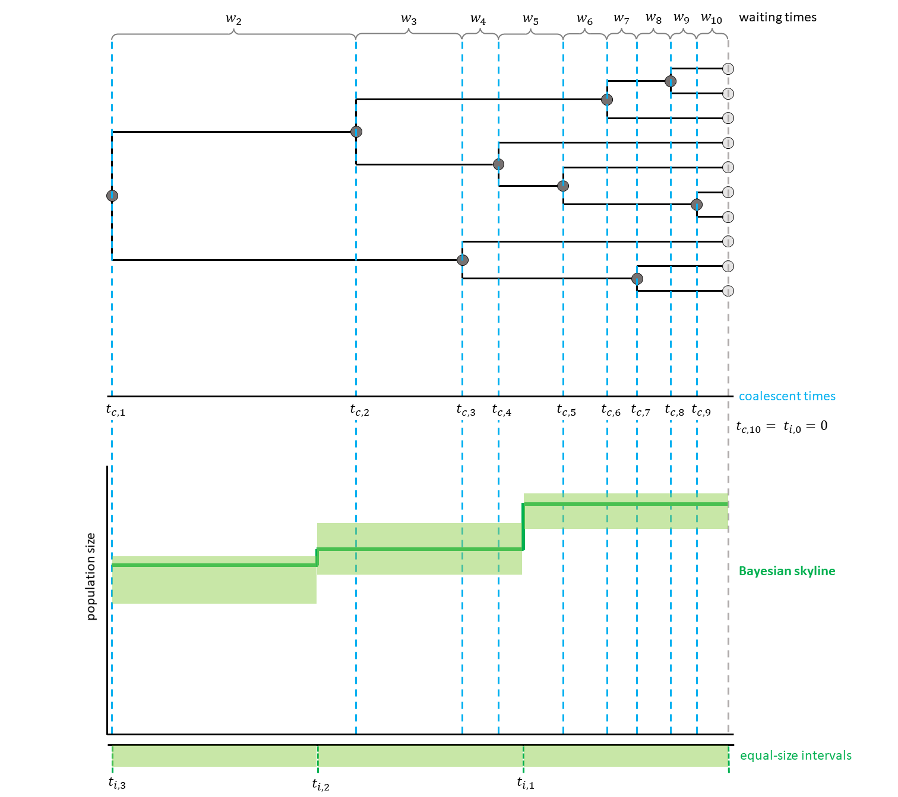
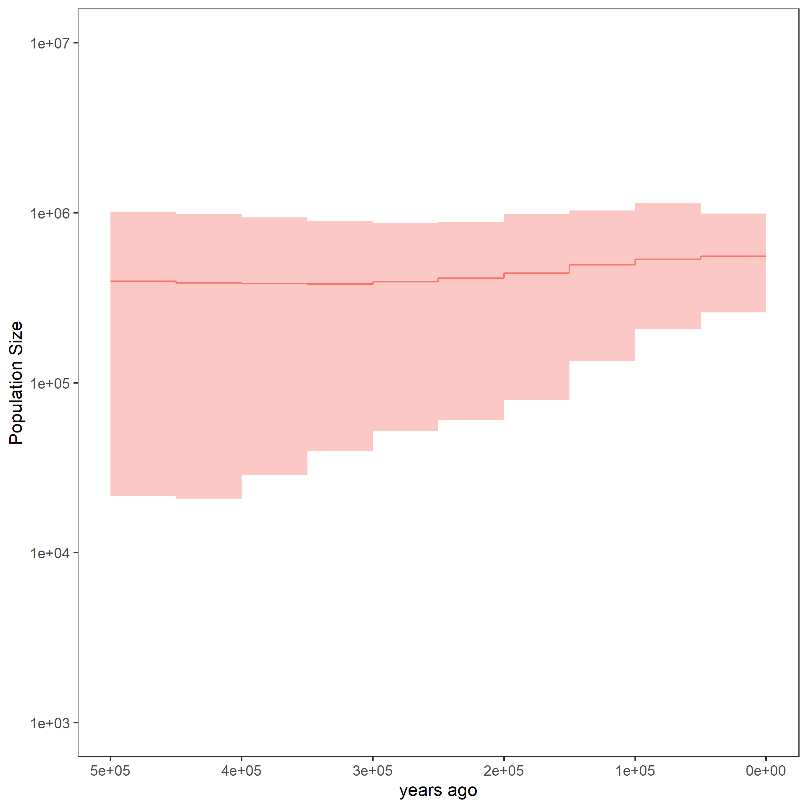

This tutorial describes how to run a Coaelescent Skyline Analysis with a Gaussian Markov Random Field (GMRF) prior in RevBayes.
This is a special case of a skyline plot.
The most notable difference to the previous exercise is that the population size is autocorrelated, i.e., each population size has a prior distribution that is centered on the population size from the previous, more recent, interval.
This leads to a smoothing effect of the population size trajectory with adjacent intervals most likely having similar population size values.
In case of a strong signal from the data indicating a change in population size, however, this can also be reflected in the resulting trajectory.
Here, the intervals additionally are equally spaced and thus their start and end points are independent from the coalescent events (see for a hypothetical example).

Likelihood Calculation
ADD
We assume that the phylogeny of the samples is known. There are $n$ samples, with $k$ active lineages at the current point in time $t$. Time starts at $t = 0$. The waiting times between coalescent events $w_k$ are exponentially distributed with rate $c = \frac{k (k-1)}{2N_e(t)}$ with $N_e$ being the population size.
The likelihood for a Skyline Plot is the product of the probability density functions of the coalescent waiting times, which are calculated as follows:
\[p(w_k | t_k) = \frac{k (k -1)}{2N_e(t_k + w_k)} exp \left[ \int_{t_k}^{t_k+w_k} \frac{k (k -1)}{2N_e(t)} dt \right]\]Each $t_k$ is the beginning of the respective kth coalescent interval. The waiting times $w_k$ refer to the waiting time starting when there are $k$ active lineages.
For your info
The entire process of the GMRF based estimation can be executed by using the mcmc_homochronous_GMRF.Rev script in the scripts folder. You can type the following command into
RevBayes:source("scripts/mcmc_homochronous_GMRF.Rev")We will walk you through the script in the following section.
We will mainly highlight the parts of the script that change compared to the constant coalescent model and the skyline model.
Read in the data as described in the first exercise.
For the GMRF model, you need to decide on the number of intervals. These are equally distributed in time. For a simple, quickly computed, example, we choose $10$ intervals here. Later, feel free to try the analysis with more intervals, for example $100$.
NUM_INTERVALS = 10
You will also need to define the points of change in time to reflect the equal size of the intervals. Here, we define the maximal age to be $500000$ which should cover the whole tree (based on our results from the previous exercises). Further backwards in time the population size is thought to be in equilibrium and to be equal to the population size of the most ancient interval. The first interval (automatically) starts at $t = 0$, the other starting points depend on the number of intervals and the maximal age.
MAX_AGE = 500000
for (i in 1:(NUM_INTERVALS-1)) {
changePoints[i] <- i * ((MAX_AGE)/NUM_INTERVALS)
}
For each interval, a population size will be estimated.
In this case, the most recent population size (population_size_at_present) is treated differently to the other population sizes.
This is due to the fact that all other population size priors depend on the one more recent.
For population_size_at_present we assume the same prior distribution and initial value as in the previous exercises.
population_size_at_present ~ dnUniform(0,1E8)
population_size_at_present.setValue(100)
Note that we apply three different moves to the recent population size here: a scaling move (mvScaleBactrian), a mirror move (mvMirrorMultiplier) and a random dive move (mvRandomDive).
The scaling move multiplies the currently proposed value with a scaling factor, the mirror move “mirrors” a value from a normal distribution on the other side of the posterior mean and the random dive move is a different type of scaling move.
moves.append( mvScaleBactrian(population_size_at_present,weight=5) )
moves.append( mvMirrorMultiplier(population_size_at_present,weight=5) )
moves.append( mvRandomDive(population_size_at_present,weight=5) )
In the GMRF model implemented in RevBayes, we do not set priors on the remaining population sizes, but on the log-scale differences between population sizes (delta_log_population_size).
This way, the estimated parameters can be treated as independent even with the auto-correlation of the population sizes and MCMC sampling is easier.
The overall variability of the trajectory is controlled by the standard deviation of the Normal distribution from which these delta_log_population_size values are drawn.
This standard deviation is the product of a global scale parameter and its hyperprior.
Therefore, you first need to define the hyperprior for the global scale parameter.
You can get the appropriate value for this hyperprior dependent on the number of change points by using the R package RevGadgets.
Here, we ran the function setMRFGlobalScaleHyperpriorNShifts(9, "GMRF") to know the value of $0.1203$ (remember that there are nine change points with ten intervals).
To have a prior distribution on delta_log_population_size which favors autocorrelation, but allows for sudden changes, a halfCauchy distribution is chosen for the global scale.
We also add a scaling move to the global scale.
population_size_global_scale_hyperprior <- 0.1203
population_size_global_scale ~ dnHalfCauchy(0,1)
moves.append( mvScaleBactrian(population_size_global_scale,weight=5.0) )
The standard deviation of the aforementioned Normal distribution of the delta_log_population_size values can now be defined by multiplying the global scale hyperprior with the global scale.
Here, we achieve all desired properties (favoring similar values but allowing for flexibility) by multiplying a halfCauchy(0,1) distribution with the value of the hyperprior ($0.1203$) that we calculated before.
This is just a hierarchical way of defining a halfCauchy(0,$0.1203$) distribution. (Is this true?)
We add a sliding move to the delta_log_population_size values.
Note that in RevBayes the standard deviation (sd) is used as input for the Normal distribution instead of the variance of the distribution (which would be the square of the standard deviation).
for (i in 1:(NUM_INTERVALS-1)) {
# non-centralized parameterization
delta_log_population_size[i] ~ dnNormal( mean=0, sd=population_size_global_scale*population_size_global_scale_hyperprior )
# Make sure values initialize to something reasonable
delta_log_population_size[i].setValue(runif(1,-0.1,0.1)[1])
moves.append( mvSlideBactrian(delta_log_population_size[i], weight=5) )
}
Finally, the different population sizes need to be combined to form the vector of population sizes that we want to see as result in the end.
In RevBayes, a function for this kind of assembly is implemented: fnassembleContinuousMRF.
Note that you could also define the first value on a log scale, but then need to adjust the value of initialValueIsLogScale to be TRUE.
This analysis is based on a GMRF of order $1$.
Higher order GMRF also exist, but will not be discussed here.
population_size := fnassembleContinuousMRF(population_size_at_present,delta_log_population_size,initialValueIsLogScale=FALSE,order=1)
For this kind of analysis, the mvEllipticalSliceSamplingSimple move has to be added.
Without it, convergence would be difficult to achive.
Of course, we also need to add moves for the different population size parameters.
# Move all field parameters in one go
moves.append( mvEllipticalSliceSamplingSimple(delta_log_population_size,weight=5,tune=FALSE) )
# joint sliding moves of all vector elements
moves.append( mvVectorSlide(delta_log_population_size, weight=10) )
# up-down slide of the entire vector and the rate at present
rates_up_down_move = mvUpDownScale(weight=10.0)
rates_up_down_move.addVariable(population_size_at_present,FALSE)
rates_up_down_move.addVariable(delta_log_population_size,TRUE)
moves.append( rates_up_down_move )
# shrink expand moves
moves.append( mvShrinkExpand( delta_log_population_size, sd=population_size_global_scale, weight=10 ) )
If you are interested in more details on why the analysis is set up in this way, have a look at the Episodic Diversification Rate Estimation tutorial where an analysis is performed with a similar model. Also, the Magee et al. (2020) paper provides further background information on these kinds of analysis.
Now, we will instantiate the stochastic node for the tree.
Similar to the skyline exercise, we use the dnCoalescentSkyline distribution for the tree.
In the GMRF case, however, the method is not based on events, but has specified intervals.
psi ~ dnCoalescentSkyline(theta=population_size, times=changePoints, method="specified", taxa=taxa)
In order to be able to later plot and analyze the population size curve, we can retrieve the resulting interval times as for the skyline exercise. Here, they should not change, so you might as well omit this line.
interval_times := psi.getIntervalAges()
Again, we constrain the root age as before and add the same moves for the tree.
This part is also taken from the constant coalescent exercise.
In the end, we need to wrap our model as before.
Finally, we add the monitors and then run the MCMC. Remember to change the file names to avoid overwriting your previous results.
monitors.append( mnModel(filename="output/horses_GMRF.log",printgen=THINNING) )
monitors.append( mnFile(filename="output/horses_GMRF.trees",psi,printgen=THINNING) )
monitors.append( mnFile(filename="output/horses_GMRF_NEs.log",population_size,printgen=THINNING) )
# monitors.append( mnFile(filename="output/horses_GMRF_times.log",interval_times,printgen=THINNING) )
monitors.append( mnScreen(population_size, root_age, printgen=100) )
mymcmc = mcmc(mymodel, monitors, moves)
mymcmc.burnin(NUM_MCMC_ITERATIONS*0.1,100)
mymcmc.run(NUM_MCMC_ITERATIONS, tuning = 100)
After running your analysis, you can plot the results using the R package RevGadgets.
library(RevGadgets)
burnin = 0.1
probs = c(0.025, 0.975)
summary = "median"
population_size_log = "output/horses_GMRF_NEs.log"
interval_change_points_log = "output/horses_GMRF_times.log"
df <- processPopSizes(population_size_log, interval_change_points_log, method = "specified", burnin = burnin, probs = probs, summary = summary)
p <- plotPopSizes(df, method = "specified") + ggplot2::coord_cartesian(ylim = c(1e3, 1e8))
ggplot2::ggsave("horses_GMRF.png", p)

Related to the GMRF, there also is the Horseshoe Markov Random Field (HSMRF) prior. It can be seen as a more generalized version of the GMRF with the difference lying in the definition of the standard deviation of the values in the intervals (Faulkner et al. 2020; Magee et al. 2020). It is even more flexible, because each interval has an additional variable assigned to the variation. Thus, you don’t only change the global scale of variability, but the local scale in each interval. The GMRF can be seen as a special case, where this local scale value is set to $1$. In the tutorial Episodic Diversification Rate Estimation, the HSMRF prior is applied to the estimation of diversification rates. Have a look at the Specifying the model section and try to change the respective lines in your current script to follow the HSMRF procedure. Do your results look different?
Hint
The lines you should look at are lines 67 to 73 in the script. There, you can change the way the standard deviation of the population sizes per interval is calculated. It now has an additional value
sigma_population_sizefor each interval. This is the local scale parameter.for (i in 1:(NUM_INTERVALS-1)) { # Variable-scaled variances for hierarchical horseshoe sigma_population_size[i] ~ dnHalfCauchy(0,1) # Make sure values initialize to something reasonable sigma_population_size[i].setValue(runif(1,0.005,0.1)[1]) # moves on the single sigma values moves.append( mvScaleBactrian(sigma_population_size[i], weight=5) ) # non-centralized parameterization of horseshoe delta_log_population_size[i] ~ dnNormal( mean=0, sd=sigma_population_size[i]*population_size_global_scale*population_size_global_scale_hyperprior ) # Make sure values initialize to something reasonable delta_log_population_size[i].setValue(runif(1,-0.1,0.1)[1]) moves.append( mvSlideBactrian(delta_log_population_size[i], weight=5) ) }Remember to change the hyperprior value (
setMRFGlobalScaleHyperpriorNShifts(10, "HSMRF")inRevGadgets) and to add extra moves.In case you prefer to download a whole HSMRF script to compare it to the GMRF script, have a look at the HSMRF.
It is also possible to have a flexible number of intervals instead of specifying it before the analysis.
In this case, the number of intervals is also estimated.
Here, we use a compound poisson process (CPP) prior with a poisson prior on the number of interval change points and two different uniform priors on the population sizes and the change points.
In this case, a reversible jump MCMC (rjMCMC) is needed to be able to sample from the posterior distribution.
In RevBayes, this functionality is implemented in the dnMultiValueEvent distribution.
Reversible Jump MCMC with CPP prior
For the
eventDistributionparameter, a distribution on natural numbers has to be chosen. These “events” are the number of change points seperating intervals in this case and not coalescent events. In this example, we use a Poisson distribution with an expected value of $10$. ThevalueDistributionis a vector of prior distributions for the population sizes and the interval times. We also should call the variables by their names. TheminNumberEventsare $1$ population size and $0$ times corresponding to interval changes. We expect to always have one more population size than change points.events ~ dnMultiValueEvent (eventDistribution = dnPoisson(lambda=10), valueDistribution=[dnUniform(1E4,1E8), dnUniform(0.0,MAX_AGE)], names=["theta","time"], minNumberEvents=[1,0])Fo the
dnMultiValueEventdistribution, we add specific moves.# apply a move that adds and removes pairs of theta+time moves.append( mvMultiValueEventBirthDeath(events, weight=50) ) # add a move that changes the theta variables moves.append( mvMultiValueEventScale(events, name="theta", lambda=1.0, weight=10, tune=!FALSE) ) # add a move that changes the time variables moves.append( mvMultiValueEventSlide(events, name="time", lambda=10.0, weight=10, tune=!FALSE) ) moves.append( mvMultiValueEventScale(events, name="time", lambda=0.5, weight=10, tune=!FALSE) )Finally, we need to track the different parameters by assigning them to variables.
n_events := events.getNumberOfEvents() population_size := events.getRealPosValues(name="theta") changePoints := events.getRealPosValues(name="time")In the end, all the parameters can be put into the
dnCoalescentSkylinedistribution.psi ~ dnCoalescentSkyline(theta=population_size, times=changePoints, method="specified", taxa=taxa)You can have a look at the results here
When you are done, have a look at the next exercise.